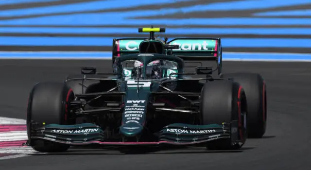

Sebastian Vettel è nato a Heppenheim il 3 luglio 1987, è un pilota automobilistico tedesco, attivo in Formula 1 con l'Aston Martin. Si è laureato per 4 volte consecutive campione del mondo di Formula 1 (2010, 2011, 2012 e 2013) con la scuderia Red Bull Racing. Annoverato come uno dei piloti più forti di tutti i tempi, è detentore di diversi record, tra cui l'essere il più giovane pilota di Formula 1 ad aver vinto un campionato mondiale e ad aver ottenuto una pole position. Nel 2021 ha vinto la prima edizione dell’”overtakes award” con 132 sorpassi Detiene anche il record del maggior numero di pole position e vittorie in una singola stagione, di gran premi vinti consecutivamente (9 nel 2013) ed è il t erzo pilota per numero di vittorie, dietro a Lewis Hamilton e Michael Schumacher. Il suo numero di gara è il 5, ma nel 2014 ha scelto di utilizzare il numero 1 in quanto campione del mondo in carica. Ha un fratello minore, Fabian, pilota nel campionato ADAC GT Masters, e due sorelle maggiori: Melanie, odontotecnica, e Stephanie, fisioterapista per bambini disabili. Vettel vive a Turgovia in Svizzera ed è stato fidanzato sin dal liceo con la sua amica d'infanzia Hanna Prater, poi sposata in segreto il 21 giugno 2019. La coppia ha tre figli. Dopo il Gran Premio di Turchia, a seguito della sostituzione di Jacques Villeneuve con Robert Kubica come pilota titolare, diviene il terzo pilota e collaudatore della BMW Sauber, risultando così il pilota più giovane ad aver collaudato una macchina di Formula 1 nelle sessioni libere di qualifica del venerdì, all'età di 19 anni e 53 giorni. Max Verstappen è il pilota più giovane a competere in un gran premio di Formula 1, mentre Nico Rosberg è il più giovane a guidare una Formula 1 in test privati. È anche il pilota più giovane a essere stato multato nella categoria: ha ricevuto una multa di 1000 dollari per aver oltrepassato la velocità massima nella pitlane. Vettel nelle sessioni dei test impressiona tutti piazzando il tempo migliore nella seconda sessione del venerdì in Turchia e ricevendo i complimenti dallo stesso Michael Schumacher. Il giovane tedesco impressiona anche nelle sessioni di test nel Gran Premio d'Italia, piazzandosi sempre in prima posizione.  Dal Gran Premio d'Ungheria Vettel sostituisce Scott Speed alla Toro Rosso. Durante il Gran Premio del Giappone, sul circuito del Fuji, è tra i candidati al podio, sotto una pioggia torrenziale, prima di venire coinvolto in un incidente con il pilota della Red Bull Mark Webber. La dinamica dell'incidente, accaduto in regime di safety car, non venne chiarita dalle immagini televisive; successivamente, un video diffuso su YouTube dimostrerà che il tamponamento di Vettel con Webber era stato causato da un brusco rallentamento del leader della gara Lewis Hamilton, che comunque non è stato punito dalla FIA. Sebastian rientra in lacrime ai box, ma avrà occasione di rifarsi già durante il gran premio seguente in Cina, in cui ottiene un eccezionale quarto posto. In virtù di questi risultati Vettel viene confermato dalla Toro Rosso per il 2008. Nel Gran Premio del Giappone il dominio Red Bull è netto: doppietta sia in qualifica che in gara (disputatesi entrambe nella giornata di domenica, a causa della pioggia che aveva reso impraticabile la pista il sabato), con il tedesco davanti a Webber. Ma nel successivo Gran Premio di Corea, nonostante l'ennesimo strapotere della sua vettura è costretto al ritiro a pochi giri dalla fine, quando conduceva la corsa, per l'improvvisa rottura del motore. Nella penultima gara, in Brasile conquista la seconda posizione in griglia e la vittoria. Grazie a questo risultato, e al secondo posto di Mark Webber, la Red Bull si aggiudica il titolo costruttori del campionato 2010. Nell'ultimo gran premio della stagione, ad Abu Dhabi, nonostante i pronostici per la conquista del titolo piloti siano tutti a favore del leader del mondiale Fernando Alonso, si laurea campione del mondo senza mai essere stato in testa alla classifica: Vettel infatti vince la gara e, grazie al modesto settimo posto ottenuto da Alonso (frutto di una errata strategia di gara al muretto Ferrari) e all'ottavo di Webber (sulla stessa strategia dello spagnolo), riesce ad aggiudicarsi il titolo per soli 4 punti sul rivale. Con i suoi 23 anni diventa il più giovane campione del mondo della storia della Formula 1, soffiando il record all'inglese Lewis Hamilton per soli 6 mesi. Nel finale di stagione 2013 Vettel continua la sua striscia di successi, arrivando a otto vittorie consecutive nel Gran Premio degli Stati Uniti e battendo il record di sette successi consecutivi che apparteneva ad Alberto Ascari e Michael Schumacher. Il pilota tedesco si migliora ulteriormente nel conclusivo Gran Premio del Brasile, cogliendo la nona vittoria consecutiva. Grazie a questo successo Vettel chiude il campionato con 397 punti, battendo il suo stesso record di punti conquistati in una stagione (392 nel 2011), record battuto da Lewis Hamilton nel 2018 (408 punti). Il 20 novembre 2014 viene annunciato il suo passaggio alla Ferrari per la stagione 2015. Il 29 novembre prova per la prima volta una Ferrari, testando a Fiorano la F2012. Il 1º febbraio porta al debutto la nuova Ferrari SF15-T sul circuito di Jerez de la Frontera, nella prima sessione di test invernali pre-stagionali. L'11 marzo annuncia di aver scelto "Eva" come nome per la sua Ferrari. Alla ferrari Seb non incide come alla Red Bull, Vince qualche gara e arriva in seconda posizione del campionato come milgior piazzamento, ma non riuscirà mai più a vincere un campionato mondiale. Dopo 5 anni in ferrari nel 2021 passa alla neonata Aston Martin con cui non incide mai come negli anni passati, faticando in tutte le gare e lottando principalmente per un piazzamento nelle retrovie.